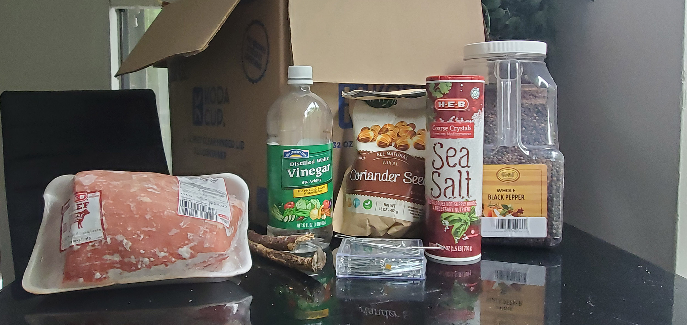
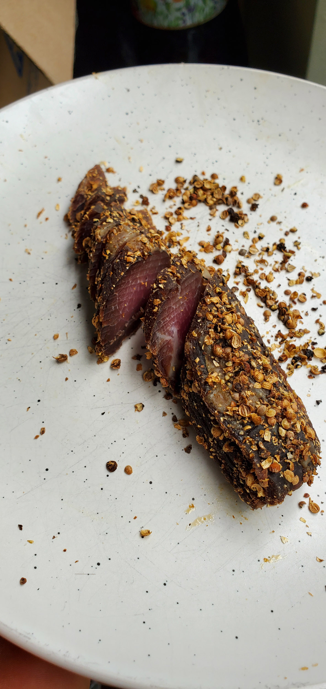

BILTONG
Biltong is a delicious South African dried meat snack that's cured in vinegar, covered with spices, and then hung to dry for a few days. You can make it with pretty much any kind of meat. (Traditionally it was made with venison or beef.) It's chewy and some parents in South Africa give it to babies when they're teething. Like any dried meat, biltong is expensive to buy, but magnitudes cheaper to make yourself.
WHAT YOU NEED
-
MEAT
Biltong can be made with lots of kinds of meat, but I use beef, specifically the round cuts. I dry four to eight pounds at a time. Expect it to lose about 40% of its weight as it dries.
-
VINEGAR
To cure the meat. I use white vinegar but you can use other types too.
-
SALT
(Coarse) for the seasoning. For four pounds of meat, I use like 1/5 of a cup.
-
PEPPERCORNS
We'll crush these peppercorns. For the seasoning. For four pounds of meat I use half a cup of peppercorns.
-
CORIANDER SEEDS
We'll crush these, too...gently. For the seasoning. For four pounds of meat I use half a cup of coriander seeds.
-
BIG OLD BOX
You'll let the meat hang in this box for a few days to dry. You can literally use a cardboard box you found in a recycling dumpster, it's not like the meat's gonna be touching it.
-
A COUPLE OF STICKS
Or rods or something, for the meat to hang from. You can even use tree branches.
-
PAPERCLIPS
Or just some kind of hook to pierce the meat with so you can hang it from the sticks.
1 - Slice the meat

I use bottom-round rump roasts like this one. But you can use whatever you want. More flavorful meat should make more flavorful biltong. Some people like fatty meat, others don't. They say you should buy meat whose grain runs down the long side of the cut. IDK if it matters.

Don't that look fancy.
Slice the meat into strips. Each strip can be like 2 inches wide, and 1 or 2 centimeters deep. I usually get 3 to 4 slices per pound, using the cuts shown in the photos. Remember, they'll shrink as they dry.
2 - PREPARE THEM SPICES

Traditional biltong uses coriander seeds, salt, and pepper. You can also add other things like chili pepper if you want to play around.
Toast the coriander seeds in a pot to darken them a bit to enhance the flavor. The spices should be coarse, not finely ground. I like to use my mallet to bonk them. (Trust me a mortar and pestle is too tedious for this quantity of spices).
Coriander seeds are easy to crush -- peppercorns are harder. Crush them separately or you'll pulverize the coriander too hard. Here are some pics of them before and after the bonking:


I have good experiences using almost equal parts of these three spices, except for the salt which is a bit less. As a ratio of pepper : coriander : salt, it'd be about 1 : 1 : 2/3
3 - CURE IT ALL

Curing is the addition to meats of some combination of salt, sugar, nitrite and/or nitrate for the purposes of preservation, flavor and color. The Afrikaner pioneers in South Africa who migrated across the country with slow oxdrawn wagons had to preserve meat to make it last for periods when meat wasn't readily available. We will use our spices and vinegar to cure our meat. You'll need a dish for the meat to lie in while it cures. (You can use like a baking pan or something if you want.) I use some foil pans I got on sale a while ago.
As in this video, I just dip each slice of meat in the vinegar, rub it in a pile of spices, and set it in the tray. I've learned to be very liberal with the spices. The first time I made biltong, I didn't use enough spices. Now I know there's basically no such thing as "too much," so go wild.

Yum. Gently flick/drip more vinegar over the meat strips, the meat should be sitting in a little puddle of vinegar while it cures. Let it cure for a few hours. (I do an hour and a half on each side.)
4 - HOOK 'EM ROUND
OK choose a place to dry the biltong for the next few days. Choose a room with good ventilation, one that doesn't get humid. Air circulation helps it dry, so I position a fan to blow air at the gentlest setting to the box.

Now that the meat is cured, take it out, pierce the top of each strip with a paperclip hook, and hang it from a stick at the top of the box. Don't let the strips of meat touch the sides of the box, the bottom of the box, or each other.
When you take the meat out of the curing tray, some of the spices will fall off. Try to press them back onto the strips before you hang the strips.
The air circulation shouldn't be strong enough to make the biltong strips sway.
Yum. Gently flick/drip more vinegar over the meat strips, the meat should be sitting in a little puddle of vinegar while it cures. Let it cure for a few hours. (I do an hour and a half on each side.)
5 - WAIT
Please wait a few days for it to dry. The meat will darken and become firmer. Mine is ready after three days. Be patient and enjoy the aromas!
6 - CUT AND EAT

The meat should be dark and firm when you take it off the hooks. The thin pieces dry faster. Take them off the hooks and cut one of the strips. Biltong is usually sliced like this:
A lot of the spices fall off when you handle it and slice it. I like to press the slices into the spices so it keeps all their flavor.
I like it when it still has some redness inside. Everybody has a preference. Enjoy it, I love having it with some cheddar!
How much you save by making it yourself
I get my meat at HEB for about $3.75 per pound, which means each dried pound of meat is costing me between $6 and $7. All in all, counting the price of the spices and vinegar, I probably spend about $7 per pound when I make my own biltong this way, compared to the $40 per pound it seems to go for in shops.